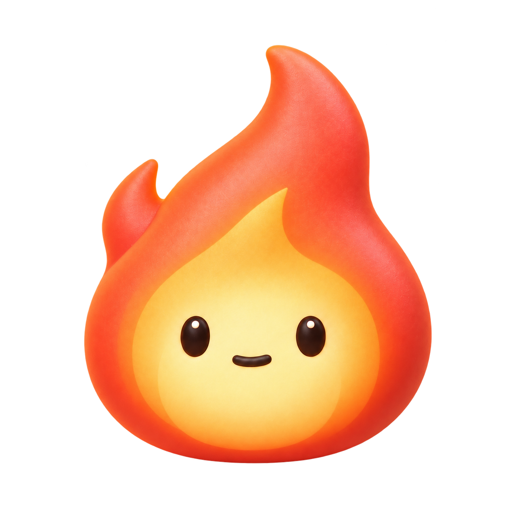

A LITTLE FLAME, A GENTLE NUDGE
숫자 대신,
지금 내 불꽃.
평소에는 조용히 일렁이다가,
말이 거칠어지면 조금씩 커집니다.
익숙한 얼굴로, 쉬어갈 순간을 알려줍니다.
작은 불꽃이 천천히 몸을 기울입니다.
작업 중 시선을 빼앗지 않을 정도로만 움직입니다.
작업 중 시선을 빼앗지 않을 정도로만 움직입니다.
상태 버튼으로 모습과 속도를 비교해 보세요.
현재 화면은 합성 데이터로 만든 디자인 시안입니다.
시스템의 ‘동작 줄이기’ 설정을 따릅니다.
조금 뜨거워졌어요. 잠깐 쉬어갈까요?
AngerRate감지 중

잔잔하게 일렁이고 있어요
지금은 거친 표현이 거의 없어요.
최근 감지한 신호
아직 감지한 신호가 없어요—
내 속도로 이어가세요
메뉴 막대는 작은 실루엣 · 패널은 익숙한 얼굴